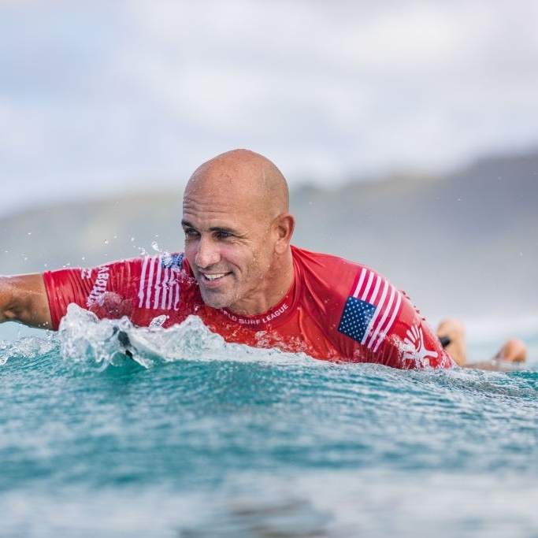

- Recordista de vitórias na carreira: 56
- Recordista de vitórias no WCT: 54
- Vitórias na mesma temporada: 7
- Recordista de Títulos Mundiais: 11 (1992, 1994, 1995, 1996, 1997, 1998, 2005, 2006, 2008, 2010, 2011)
- Recordista de Títulos Mundiais consecutivos: 5
- Recordista de vitórias no Pipe Masters: 7 (1992, 1994, 1995, 1996, 1999, 2008 e 2013)
- Recordista de vitórias consecutivas no Pipe Masters: 3 (1994-1996)
- Título Mundial por antecipação: campeão na 9ª das 11 etapas (em Mundaka em 2008)
- Campeão Mundial mais jovem da história: 20 anos (1992)
- Campeão Mundial mais velho da história: 39 anos (2011)
- Vencedor mais velho de uma etapa: 44 anos (em Billabong Pro Tahiti em agosto de 2016)
- 2 vezes fez a maior pontuação em uma bateria: 20 pontos de 20 possíveis (na final no Taiti em 2005; quartas de final no Volcom Fiji em 2013; Round 5 no Billabong Pro Tahiti em 2016)
